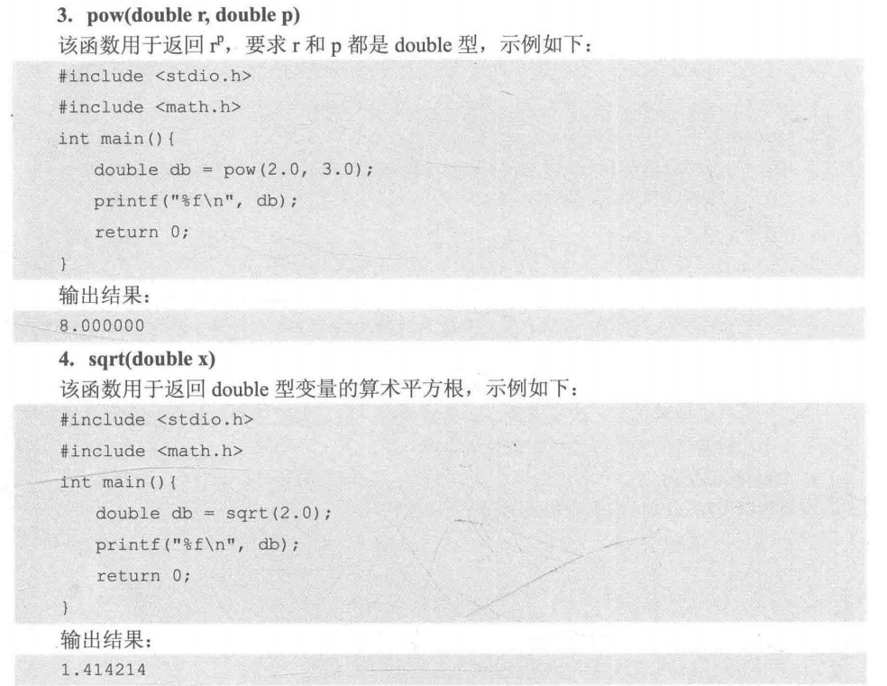

1、 程序提交结果： > (1) 答案正确：AC(Accepted)
(2) 编译错误：CE(Compile Error)
(3) 答案错误：WA(Wrong Answer)
(4) 运行超时：TLE(Time Limit Exceeded)
(5) 运行错误：RE(Runtime Error)
(6) 内存超限：MLE(Memory Limit Exceeded)
(7) 格式错误：PE(Presentation Error)
(8) 输出超限：OLE(Output Limit Exceeded)
1、 scanf函数：注意不要忘了”&“符号！！
int a,b;
scanf("%d%d",&a,&b); // %d是整型变量的标准输入
printf("%d",a+b);2、 四种基本数据类型及取值范围：
3、 注意： > (1) 无符号数加unsigned。
(2) long long 类型变量超过(2^31)-1就要加LL后缀。
(3) 浮点数后缀F。
(4) 32位整数用int，64位用long long。
(5) 浮点数用double，不用float。float为32位，精度6-7位；double为64位，精度15-16位。
4、 字符常量and字符变量：
(1) 字符常量：不能够被改变，不能够被赋值。 例如： ‘c’。 字符常量（必须是一个字符）要用单引号引起来以示区分。
(2) 字符变量：能够赋值。 例如：char c。
5、 小写的字母比大写字母的ASCII值大32.
6、 转义字符： > (1) \n: 表示换行。
(2) \0: 表示空字符NULL，其ASCII值为0，并不是空格。
7、 计算机中没有存储字符串的基本数据类型（C++中有string），因此只能用字符数组来进行存储。不能讲字符串常量赋值给字符变量，例如：
char c="abdc";//写法错误8、 布尔类型在C语言中使用时必须要加头文件：stdbool.h。整型变量赋值给布尔类型自动转换为true(非零)或false（零）。
9、 各种数据类型输出格式： > (1) int整型：%d
(2) float和double浮点型：%f
(3) char字符型：%c
(4) 字符串数组：%s
(5) 保留n位小数：%.nf
10、 强制类型转换：（数据类型）数据。
11、符号常量：
(1) define关键字
#define 标识符 常量
或者
#define 标识符 任何语句或片段
例如：
#define PI=3.1415926
#define ADD(a,b) ADD((a)+(b))（2）const关键字（推荐使用！）
const 数据类型 变量名=常量；
例如：
const double PI=3.1415926；12、 除法运算：被除数and除数都是整型时，会自动舍弃小数部分，向下取整。
13、 自增运算++i与i++的区别： > (1) ++i: 先将i加1再使用i。
(2) i++: 先使用i再加1。
14、六种运算符：
15、 三种逻辑运算符：
A?B:C
例如：
2>3?"NO"："YES";17、 六种位运算符：
18、 scanf格式符：
注意！！！字符数组%s格式符没有&符号！！！！！！
19、 printf格式符
注意！！double类型的scanf格式符和printf格式符不一样！！
20、 想要输出’%‘或者’\‘，需要在前面增加一个相同的’%‘或者’\‘。
